Templar Overview Document
If you have comments /queries about this documentation, email them to:
templar@tavisca.com
Table of Contents
1. What is Templar?
Key features of Templar
2. Basic Terminology
Widget
Page
Theme
Layout
Custom layout
Culture
Template
Site
3. Application Overview
Sites
Templates
Globals
Reports
Admin
4. Application Section Details
Sites
1. Home
2. Page listing
3. Designer
Templates
1. Manage Templates
2. Diff manager
Globals
1. Global Cultures
2. Global Themes
Reports
1. Application Errors
2. Logged exception
3. Audit Logs
4. Cache Stats
5. Feedback
6. Scheduled Pages
Admin
2. Manage Artifacts
3. Manage Tabs
4. Manage Widgets
5. Manage Widget groups
5. FAQ’s
How can I backup my Templar site?
Is there a way to automate Templar site releases across environments?
What technologies should I know to create Templar sites?
Templar v1.7 - Overview Document
What is Templar?
Templar is a framework for building highly customizable and reusable web applications.
Templar works on the concept of widgets, which are the building blocks for creating web sites.
It’s very easy to create widgets. Once created, these widgets can be quickly customized and reused for different display and functional settings.
Templar admin application provides full management interface for building and managing websites with widgets. Developing a website using Templar is a drag-drop designer based experience.
Templar users can manage and change the look and feel of websites by
- Changing themes,
- Using multi-language support,
- Customizing layouts,
- Managing site versions,
And many such features that come out of the box.
Key features of Templar
- Ability to build and manage highly dynamic ecommerce sites, such as full blown travel websites.
- Ability to run multiple sites on a single instance, with multi domain support.
- Easy internalization with multi language & currency support.
- High level of customization with ability to configure every aspect of a website.
- Out of the box support for pages to be served on SSL, SEO and page routing configurations.
- Highly flexible mechanism for passing data between widgets, whether the widgets are on the same webpage or on different webpages. Highly scalable with inbuilt support for web farm deployment and distributed caching.
- Easy to deploy websites across environments.
- User management with high level of security and inbuilt access control.
- Audit log capabilities to see all changes made via APIs or the admin application.
- Strong isolation of live and current view with ability to preview and compare versions.
Basic Terminology
Widget
A widget is a web application which can be used across websites and web pages. It can be as simple as an ad banner which shows an image and its related message or as complex as a fully working application like an email client which provides features like Yahoo or Google mail. Widgets can be creating using HTML/JavaScript/CSS or they may also include server side code.
Page
A standard web page or document is referred to as a page in Templar. All Templar pages follow some layout and would have widgets added in them. Templar allows various configurations for serving pages such as http only (unsecure), https only (secure) or allow both http and https access.
Based on their settings pages can be classified under following types
- Page: These are the standard type of pages as described above.
- Default page: one page of the site can be made as the default page. This is the page which is shown when a request is made for the site without specifying any specific page.
- Login page: In case of a password protected website, this is the page where users would be redirected for login before accessing protected pages.
- Master page-this type of page allows a user to select widgets and place holders to create a consistent layout for a set of pages in your application. Other pages called content pages can set this page as their master page or parent and get the same layout and widgets automatically.
- Content page-pages which have a master page as their parent are called content pages. These inherit the layout and widgets from their master page. New widgets can be added to these pages where available placeholders are available in the master page.
Theme
The visual look and feel of a site is controlled by a theme. It includes standard CSS, images, media and other files as used in web development. Themes are kept standard so as to avoid any learning curve for designer or developers creating them. When a theme is applied to a site, Templar includes a reference to all CSS files in the Theme folder in all pages of the site. In case a theme folder has multiple CSS files, Templar ensures that the files are lined in an alphabetical order based on folder level. Templar allows two types of themes
- Site level themes – which can only be used in the site they are created in.
- Global themes –which can be shared across multiple sites.
Layout
The default display of a Templar page is controlled by the layout. By default, a page is made up of three areas- header, content and footer. The content area can be sub divided into one, two or three columns. All content sections can be further customized at page level.
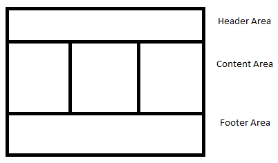
Custom layout
This feature allows custom page layouts to be created and used in Templar pages. This is a powerful feature when it comes to designing sites based on unique layout requirements and with all the benefits of master pages, themes, widget reuse and other Templar capabilities.
Culture
Culture is a way for website and\or widget to adopt its content to a specific country and\or language. A single instance of culture has format settings such as date, time, currency and number formatting information. A culture would also have translated language content and resources like images, media and other files for a particular country and\or language setting.
Template
Templar has a mechanism to create a package of a site with all its content like settings, pages, themes, and resources. This package is called a template. A template can be used to create site backup for comparison with an existing site or for copying a site from one environment to another. A template contains information about global resources like global culture, global themes and widgets but does not contain their content.
Site
A site is a made up of one or more pages. Sites can have multiple themes associated with it, with one being the default. (Templar users can also set the site culture settings and have appropriate globalization data for internalization of their content. Sites can also contain resources such as files, text and images, which can also be exposed publically based on permissions.
Application Overview
Templar application is divided into the following parts:
Sites
This section is the heart of Templar. It allows all site related operation like;
- New site creation.
- Site settings, SEO settings, error handling and layout management.
- Creation and comparison of site versions.
- Site publishing options to make current site changes live.
- Site theme creation and management.
- Site specific culture creation and management.
- Page creation and management.
Templates
This section enables all template related functionality like;
- Template management – creation, deletion and download of Templates.
- Diff manager –allows new template creation based on diff (difference between two existing sites) of current Sites and\or Templates.
Globals
This section allows management of for global level items like;
- Global cultures creation and management.
- Global themes creation and management.
Reports
This area enables viewing operational reports of current Templar deployment. It includes reports like
- Exception reports and their details for all sites.
- Audit log entries and their details.
- Cache usage reports and management options.
- User feedback reports and details.
- Scheduled pages reports.
Admin
This is the section which includes administration features like;
- User creation and management.
- Access control features for Templar application and artifacts like widgets, sites and templates.
- Widgets registration flow for the current deployment.
- Widget group creation for easy categorization.
Application Section Details
Sites
1. Home
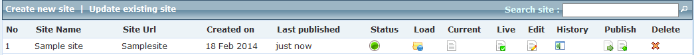
- Create new site – allows creating new sites from scratch or using an existing template.
- Update existing site – Allows current sites to be compared and updated with existing sites or templates in the current deployment. Also allows remote comparison and update of sites if the user has access to remote Templar deployment.
- Status – Indicator that shows if a site has been published or not and if it is currently offline or online.
- Load – this drills into site details and shows site’s page listing.
- Current – this shows the current view of site’s default page. This is the view that will get pushed to live if the site is now published.
- Live – In case the site is already published and online, than live view displays the site’s current default page as seen by end users.
-
Edit – All site level settings can be configured from this section. Site level settings are:
- Site details – site details like URL, map to domain and status change options.
- Themes – site and global level theme settings for the site.
- SEO options – site level meta tags and analytics settings.
- Environment data – site level settings which will be accessible to all widgets.
- Error handling – for creating site specific page not found (404) error page or other page mappings.
- Site layout – for setting default layout for site pages. Pages can change the layout later if required.
- Globalization – site and global level culture settings and detection mode for site.
- Resources – ability to add site level resources which are accessible to all widgets internally and can be exposed external if required.
-
Scripts – provides capability for adding JavaScript references to all pages in the site.
Scripts can be reference via external URL, relative path or site resources. Ordering of scripts is also provided. Finally it also enables replacing jQuery reference on the live pages which is always the first key in the list.
- History – flow for viewing existing site versions and also allows new site version creation. It has a diff feature where you can compare an older version of the site with its current version.
-
Publish
- Full publish – this allows the complete site to be published and made live to end users. All changes in the current version are made live with this option.
- Selective or advance publish – this allows individual site sections to be published. This featured is used to publish incremental site changes live.
-
Delete – Allows deletion of site. This feature is to be used with caution as it deletes all site versions including live and all history for the site.
2. Page listing
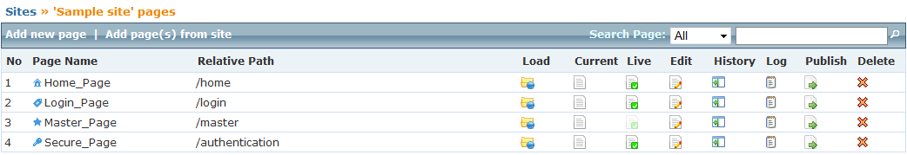
- Add new page – Allows new page creation for the site. Page creation includes basic options like name, title and URL. Advanced options include:
Creating master page or content page (page having a master page as its parent).
Making the page the default page for the site.
Making the page as the site’s login page or making the page as login protected.
Setting the page to be served as secure (https only).
Allowing setting page level data and other page layout change options.
- Add pages from site – this feature allows a user to quickly copy pages from other existing Templar sites that a user may have access to, to the current site. Please change the copied page’s URL after copying as the URL made is not very usable.
- Load – this loads the page in the designer. The designer allows ability to create a fully working page with option to add\modify widgets to the page, do inter widget events mapping, layout tweaking and other options.
- Current – this shows the current view of the page. This is the view that will get pushed to live if the page is published now.
- Live – If the page is already published and online, than this would open the page as is being shown to end users currently.
-
Edit – this allows all page settings to be configured. Page settings are like:
- Changing page name, title or URL.
-
It also allows advance settings like:
- Setting the page to be site level default page or login page (for a secure site).
- Setting the page to be a master page or setting a page’s master page.
- Setting page connection settings to force http or https access.
- Making a page secure so it will be accessible only after authentication.
- Allows adding page level settings which are accessible to all widgets on the page.
- Allows adding metadata to this page.
- Tweak page layout from the site level default.
- Add page level scripts, these will override site level scripts if same key is present.
- History – shows existing page versions and also allows new version creation. It has a diff feature where you can compare an older version of the page with its current version.
- Log - shows page activity if some other users are currently working on the page. You can even send message to all those users by clicking ‘Add log entry’.
- Publish – Allows option to publish a page for sites which have been published once. An indicator shows pages which have changed since last publish time.
- Delete – Allows page deletion. Please note this would delete all versions (including live version) and history for the page so please use this feature with caution.
3. Designer
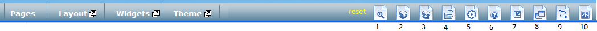
- Pages – this tab takes you back to current site’s page listing.
- Layout – this shows all available layout options for the page. Clicking on any option will change the current page’s layout.
-
Widgets – this shows all available widgets for the page. Widgets can be selected from the listing and dropped into appropriate location in the page. There are a few special widgets like:
- Content place holder – this widget is available only on a master page. This is a placeholder widget which allows all pages using this master page to add their own widgets at this location.
- Composite widget – this is a special widget which allows other widgets to be placed inside it, for creating complex layouts like putting widgets horizontally or vertically in a same location. You can even add more composite widget inside an existing composite widget and create further nesting.
Theme- this tab opens the theme manager and allows you to view\add items to the current theme which will be instantly available to all page widgets.
- 1-View current page – this option opens the current page in a new window as it would appear to a user after being published. It is a good practice to check your page changes in current view as there may be some differences between the designer view and the current view. In case of any differences always go with the current view’s view.
- 2-View live page – this option opens the current page’s live view in a new window for comparison purpose.
- 3-Publish current page – this allows current page to be published now or be scheduled for publish at a later time. It also allows page version creation.
- 4-Site pages – shows a listing of all site pages. With option to load a different page in the designer or see any pages’ current or live view.
- 5-Page settings – this shows page settings which allow for managing page data or tweaking page layout.
- 6-Widget help view – this shows widget help text on all widgets and on hover you can see the widget description.
- 7-Widget collapse setting – this option allows collapsing all widgets on the page. When widgets are collapsed their markup is not rendered and this can be used to troubleshoot a widget which has markup issues.
- 8-Widget settings display mode – this allows widget setting’s display to be shown inline or as a popup. Popup view enables you to see a bigger display and you are not constrained by the widget size.
- 9-Event mapping – this setting is used to see page widget’s events and their mapping by clicking on individual widget events.
- 10-Actvity log – this shows past page activity across all users. It can also be used to broadcast messages to other users on the same page.
Templates
1. Manage Templates
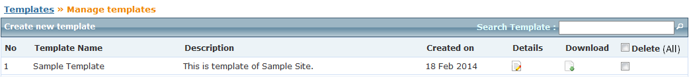
- Create new template – this allows new templates to be created from an existing site or by uploading an external template. These templates can be used to create new sites provided the required widgets are available.
- Download – allows the existing template to be downloaded as a zip which can be saved for backup or to create templates in a different deployment.
- Delete – allows multiple templates delete option post selection.
2. Diff manager
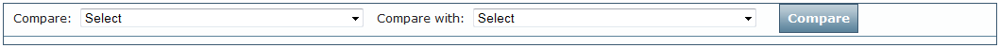
This allows comparison between existing sites and\or templates with each other. It also allows creation of new templates with additional features based on selected items from destination.
Globals
1. Global Cultures
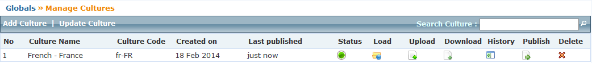
- Add culture – allows new culture creation by selecting a country and\or language.
- Update culture –allows current cultures to be compared and updated with existing cultures in the current deployment. Also allows remote comparison and update of cultures if the user has access to the remote Templar deployment.
- Status – Indicator that shows if a culture has been published or not.
-
Load – this drills down into current culture and displays details like:
- Resources text based key value pairs listing and their management options.
- Content all culture based files and their management.
- Settings date, numbers, money and other format settings.
- Upload – allow culture to be updated with an external culture set upload.
- Download – allows the existing culture to be downloaded as a zip which can be saved for backup or to create cultures in a different deployment.
- History – flow for viewing existing culture versions and also allows new version creation. It also has a diff feature where you can compare an older version of the culture with the current version.
- Publish – this allows the complete culture to be published to live.
- Delete – allows culture deletion. Please note this would delete all versions (including live version) and history for the culture so please use this feature with caution.
2. Global Themes
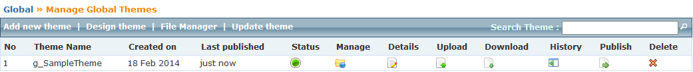
- Add new Theme – allows new themes to be created.
- File Manager – shows all global themes as a folder view.
- Update Theme – allows current Theme to be compared and updated with existing Themes of available site in the current deployment. Also allows remote comparison and update of Theme if the user has access to the remote Templar deployment.
- Status – Indicator that shows if a theme has been published or not.
- Manage – shows the selected theme in a folder based file manager view.
- Upload – allow new content to be added to the current theme.
- Download – allows current theme to be download as a zip.
- History – flow for viewing existing theme versions and also allows new version creation. It also has a diff feature where you can compare an older version of the theme with the current version.
- Publish – this allows the current theme to be published to live. Please note all sites using this global theme will start getting the new theme post publishing.
- Delete – allows theme deletion. Please note this would delete all versions (including live version) of the theme so please use this feature with caution.
Reports
1. Application Errors
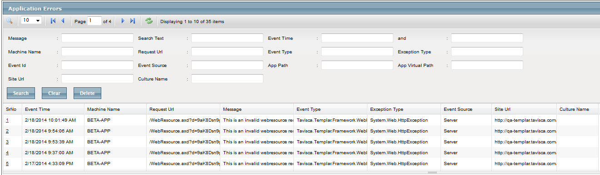
This is used to view the listing and details of all unhandled exceptions. It also provide search and filter facility with different criteria like search by message, event id, site URL, culture name etc.
2. Logged exception
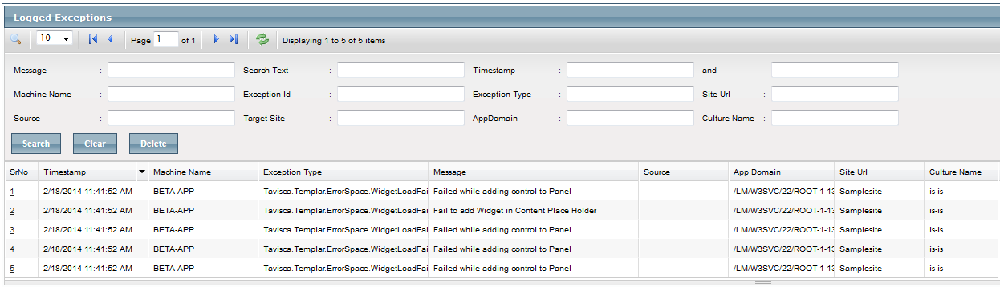
All exceptions logged using Templar logging policy are shown here. It also provide search and filter facility with different criteria like search by message, exception id, target site, culture name etc.
3. Audit Logs
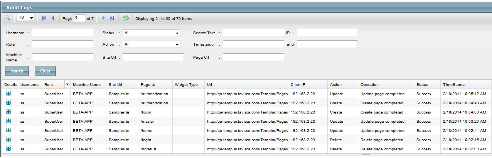
All audit log entries and their details are shown here. It also provide search and filter facility with different criteria like search by role, id, site URL, action etc.
4. Cache Stats
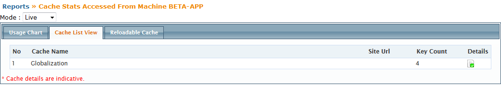
This allows all cache management tasks.
- Cache usage graphs.
- Cache listing with option to see details of what’s cached.
- Reload cache options for both design and live mode.
5. Feedback
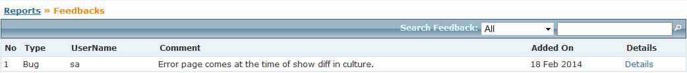
This lists all site feedbacks added via the feedback link at the bottom left corner of all Templar application pages.
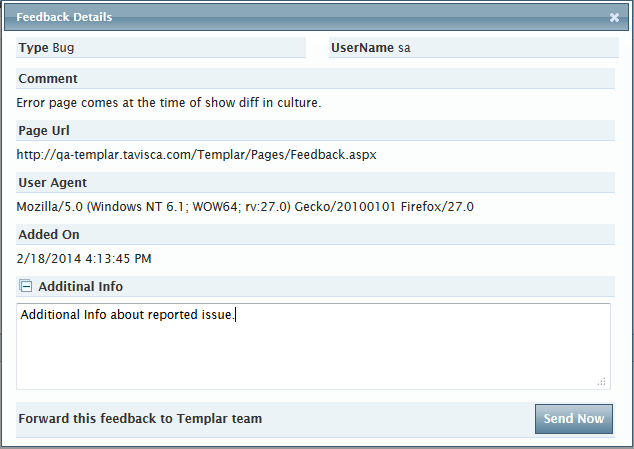
It also allows resending an existing feedback with added comments to the Templar team.
6. Scheduled Pages
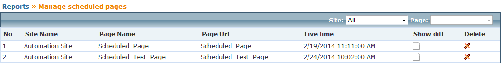
This is used to see the listing of all scheduled pages.
- Live Time – allows seeing the publish time in live.
- Show Diff – allows seeing their diff with current design page.
- Delete – allows deleting the still not scheduled pages.
6. Widget Reports
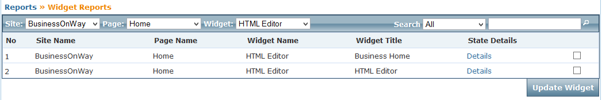
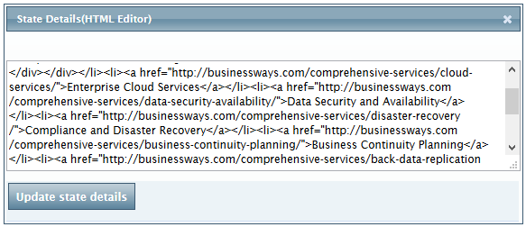
This is used for listing of Widget’s with their usage and state details.
- Widget usage for particular Site and Pages.
- Widget state detail of particular Widget.
- View and Update single or multiple Widget state.
Admin
1. Manage Users
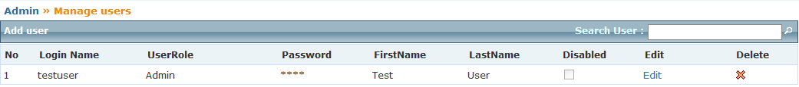
Allows ability to create and manage users who have access to the Templar admin application.
It also
- Edit – allows ability to change user name, password and role.
- Disable – allows ability to disable access of application for particular.
- Delete – allows deletion of user.
2. Manage Artifacts
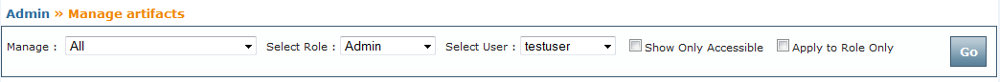
Allows access restriction settings on individual Templar assets like sites, templates and widgets, with option to set these at a role or individual user level.
3. Manage Tabs
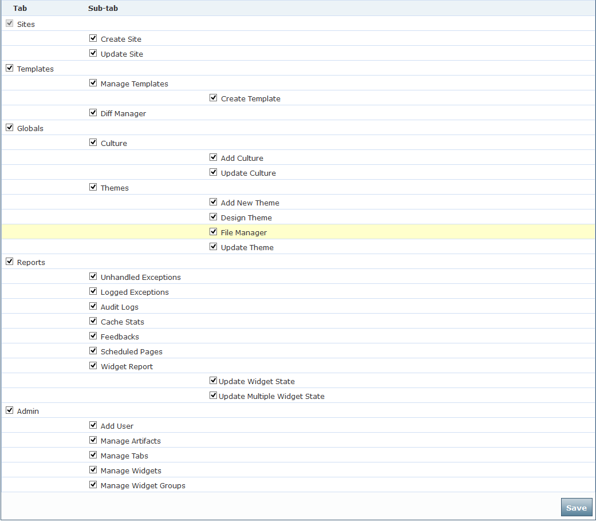
Allows granular access settings on Templar application tabs and functionality for various Templar user roles.
4. Manage Widgets
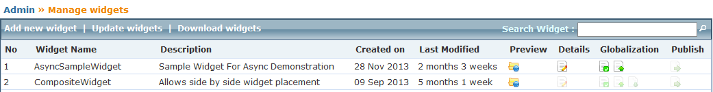
- Add new Widget – allows new widget creation by entering widget name, URL, icon and state.
- Update Widget – allows current widget to be compared and updated by uploading an external widget file. It also allows remote comparison and update of the widget if the user has access to the remote Templar deployment.
- Download – allows the existing widgets to be downloaded as a zip which can be saved for backup or to create widgets in a different deployment.
- Preview – this shows the preview of widget.
- Globalization – allows widget preview and widget level globalization data setting.
- Publish – this allows the current widget to be published to live. Please note all sites using this widget will start getting the new widget post publishing.
5. Manage Widget groups
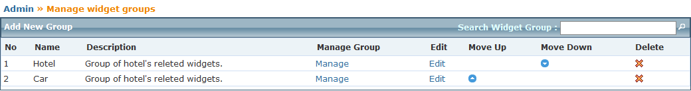
Allows widget group(s) creation for easy widget categorization. These groups are shown in designer page’s widget section tab.
- Add New Group – this allows new groups to be created to facilitate categorization. Also if there are any unassigned widgets left from all the current groups then a “Misc” group is added which shows all these unassigned widgets
- Manage – allows ability to add and remove widgets from the group.
- Move – allows setting display order of widget groups in designer.
- Delete – removes an existing widget groups, without any impact on widgets.
FAQ’s
How can I backup my Templar site?
Templar provides Templates which contain backup of a full site with all its contents. It includes pages, site settings, site resources, themes and site specific globalization data. Besides this you will need to create a backup of any global cultures and themes if used in your site. The widgets settings can be saved using download widget option but manual backup is needed for widget code.
Is there a way to automate Templar site releases across environments?
Yes this can be done using the deployment service which allows creating new sites, updating existing sites from a template or over the web and also publishing sites. It also allows management of global culture and themes for deployment purposes. Widget related settings can be automated using the widget management service. All non-code changes can be propagated via this approach.
What technologies should I know to create Templar sites?
At a basic level you only need to know HTML/CSS/JavaScript for creating sites. However if you are an ASP.NET developer than you can even create widgets, depending on your requirement and use the full power of ASP.NET 4.5 that you are familiar with.